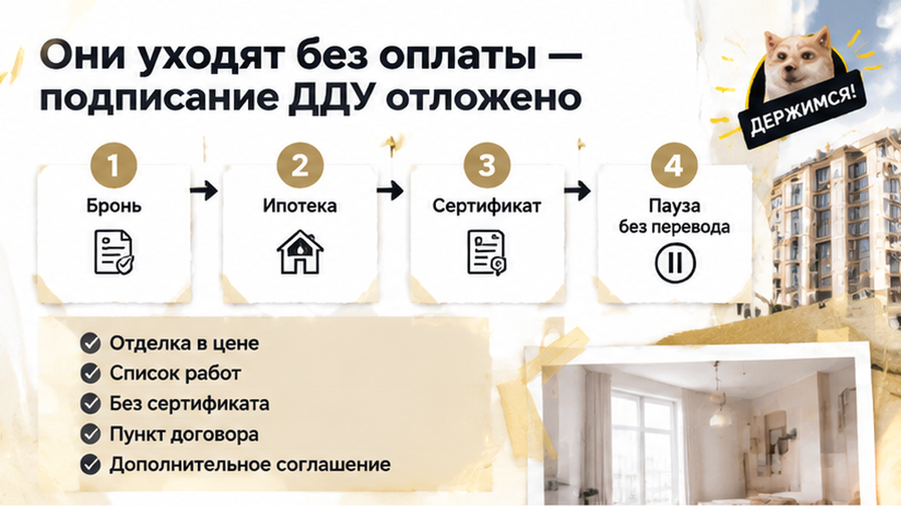
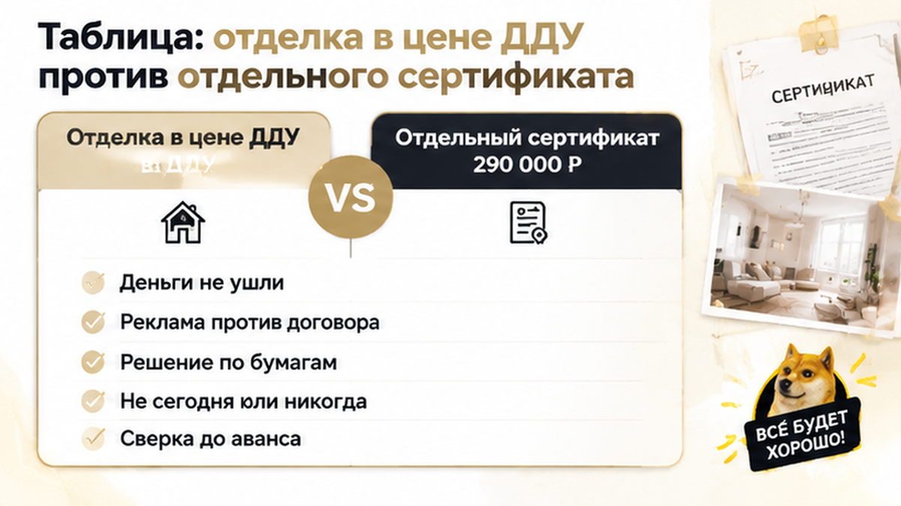

Сделка встала — семья в Тюмени уже готова была подписать ДДУ и перевести деньги на эскроу, а в последний момент ей выставили отдельный сертификат на отделку за 290 тысяч рублей сверх цены «с отделкой». Бронь уже внесена, ипотека на финальном одобрении, дата подписания давно стоит в календаре. До перевода денег оставалось только поставить подпись под договором. Расскажу изнутри, где разошлись реклама и договор и почему в тот день ручку правильно было отложить. Остановиться до оплаты не значит провалить сделку: это значит проверить, за что именно вы платите.
Цена в объявлении не сходится с проектом ДДУ? Напишите мне: Telegram · MAX. Посмотрим договор до того, как вы что-то оплатите.
Обычная переговорная в офисе продаж: стол, кулер, стопка распечаток. Семья кладёт на стол планшет с объявлением на агрегаторе. Там цена и обещание «с отделкой» после сдачи дома. Рядом лежит коммерческое предложение из этого же офиса, и в нём квартира тоже с отделкой.
Менеджер протягивает проект договора. Цена почти совпадает с рекламной, и это успокаивает. Но в приложениях нет того, что было в КП: ни списка работ, ни материалов, ни описания, в каком виде квартиру передадут.
Обычный покупатель видит знакомую цифру и выдыхает. Я в этот момент открываю приложения. Слова «с отделкой» в рекламе не означают, что отделка входит в цену договора. Что вы покупаете, решают текст ДДУ и приложения к нему, а не планшет и не презентация. Если в приложении о составе отделки ни строчки, обещание из объявления на подписании ничего не стоит.
Похожая развилка бывает и с другими обещаниями до ДДУ. Я разбирал историю, где в брони обещали одно, а проектная декларация показала другое.
Семья спрашивает прямо: «А где отделка?»
Менеджер отвечает спокойно, будто речь о мелочи: «Отделка — это отдельно». Из папки появляется «сертификат на отделку» за 290 000 ₽. Оформить его, по словам менеджера, нужно сегодня, вместе с договором. Иначе «эскроу не откроют» и «ДДУ не зарегистрируют».
«Покажите, где это написано», — просит муж. Письменного основания нет: ни пункта в проекте ДДУ, ни ссылки на приложение. Менеджер просто повторяет то же самое на словах.
Вот здесь и проходит граница. Важно не то, как называется бумага, а куда идут деньги: в цену договора или отдельным платежом сверху. Реклама обещает квартиру с отделкой. Договор даёт квартиру без неё и отдельный счёт. Это противоречие нужно снять до подписи, а не после.
Сертификат, который никак не привязан к ДДУ, слабее любого документа из договорного комплекта. В материалах по делу Urban Group такой сертификат как раз оказался проблемным: по нему трудно доказать, что застройщик обязан сделать отделку. При этом не всякий сертификат плохой. Решают его условия и связь с договором, а не название на бланке.
Семья не стала спорить на эмоциях и не подписала «чтобы не потерять бронь». Она попросила время, чтобы всё сопоставить.
Муж разворачивает планшет к менеджеру: светлая кухня, подпись «с отделкой», цена. Жена кладёт рядом распечатку коммерческого предложения из этого же офиса. Там уже не просто слова, а перечень: стены под покраску, ламинат, плитка в санузле, двери, сантехника.
Посередине стола проект ДДУ и тот самый сертификат.
Логика у них простая, как на кухне: если всё это про одну квартиру, цифры должны совпасть.
Они выписывают на листок четыре суммы. Цена в объявлении, цена в КП, цена в проекте ДДУ и 290 000 ₽ по сертификату. Первые три почти одинаковые. Четвёртая ложится сверху.
Вариантов только два. Либо квартира «с отделкой» из рекламы на деле стоит на 290 тысяч дороже договора. Либо в договоре квартира без отделки, а отделку продают отдельно.
Листают приложения к ДДУ. Планировка, площадь, этаж. Перечня из КП нет: ни материалов, ни помещений, ни описания, в каком виде квартиру отдадут.
«А где стандарт отделки?» — «Так в презентации же всё расписано».
Расскажу изнутри: в этом месте я всегда останавливаю клиентов. Презентация нужна, чтобы продать. А покупаете вы то, что написано в договоре и приложениях. Приложение должно читаться без слайдов и без устных пояснений менеджера.
Второй узел касается цены. Неважно, как назвали платёж. Важно, куда он попадает: в цену ДДУ или на отдельный счёт по отдельной бумаге. Если отделки нет ни в цене, ни в приложении, сертификат живёт сам по себе. Что по нему сделают, когда и кто за это отвечает, видно только из его условий. Одно слово «сертификат» застройщика ни к чему не обязывает.

Менеджер повторяет своё: «Без сертификата эскроу не откроют, договор на регистрацию не уйдёт».
Семья отвечает спокойно: «Покажите, пожалуйста, письменно. Каким пунктом договора или каким документом застройщика это закреплено?»
Такого документа в комплекте нет. Есть «так положено» и бланк с суммой.
Давит в эту минуту всё сразу. Бронь внесена, ипотека на финальном одобрении, дата стоит в календаре, дети ждут в машине. Хочется закончить сегодня и выдохнуть.
Обычный покупатель тут подписывает, «чтобы не потерять бронь». Профи помнит другое. Подписанный ДДУ и оплаченный сертификат назад отматываются очень тяжело. А любое изменение цены, состава отделки или «обязательности» пакета оформляется письменно и только по согласию сторон.
Семья не подписывает. Забирают КП и распечатку объявления, фотографируют проект ДДУ и сертификат. Встают из-за стола и уходят без оплаты. Подписание переносится.
Про бронь врать не буду. Что с ней будет, решает их договор брони: сроки, продление, возврат. Его теперь тоже нужно перечитать.
Но это не провал сделки. Деньги не ушли на эскроу, 290 тысяч не внесены, подписи под комплектом, где реклама спорит с договором, нет. Так же поступают покупатели, когда за три дня до ДДУ всплывает новое условие: пауза перед подписью дешевле любого спора после неё.
Расскажу, как это выглядит изнутри. Обычный покупатель в такой момент спорит с менеджером. Профи спорит с бумагой: кладёт рядом договор и задаёт вопросы, на которые отвечать должен текст ДДУ и приложения, а не презентация.
Пока деньги не ушли на эскроу, спрашивать легко. После оплаты тот же разговор идёт уже через претензии.
Гарантийное письмо и «мы вам сделаем» условие договора не заменяют. Если меняются цена, состав отделки или пакет «обязательно к покупке», это оформляют допсоглашением, и подписывают его обе стороны. Похожая история была, когда дольщикам прислали новый ДДУ после смены юрлица застройщика. Там правило было то же: текст не сходится, значит, не подписываю.
Таблица помогает сравнить две схемы до подписи. Каждый сертификат сам по себе не приговор: всё решают условия конкретных бумаг.
| Что сравниваем | Отделка в цене ДДУ | Отдельный сертификат |
|---|---|---|
| Где записано | В договоре и приложении со стандартом отделки | В отдельной бумаге, связь с ДДУ может быть неясной |
| Цена | Входит в цену договора | Отдельный платёж, у нашей семьи 290 000 ₽ сверху |
| Качество | Можно спросить с застройщика по договору | Зависит от того, что написано в сертификате |
| Что видит покупатель | Список работ и материалов | Часто только название пакета |
| Если дойдёт до спора | Документ прямо в договорном комплекте | Позиция слабее, если нет ссылки на ДДУ |

Даже если отделку записали в договор, проверка на этом не заканчивается. Следующий раз она понадобится на приёмке: вот история, где в ДДУ обещали чистовую, а на приёмке увидели голые стены.
Проект ДДУ и КП не сходятся? Пришлите их мне, найдём, где разъехались цена и отделка. Telegram · MAX
Семья встала из-за стола и ничего не проиграла. Деньги остались у неё, подписи под противоречивым комплектом нет, и 290 000 ₽ не превратились в молча согласованную сумму. С бронью разберутся по её условиям, но решение теперь принимают по документам, а не под давлением «сегодня или никогда».
Это и есть нормальная покупка новостройки. Перед оплатой кладёте рядом цену из объявления или КП и проект ДДУ и ставите подпись только тогда, когда цифры совпали.
Если сертификат уже включён в цену квартиры, это прозрачная комплектация от застройщика или замаскированная доплата перед ДДУ? Напишите в комментариях, как вам объясняли это в офисе продаж и что в итоге оказалось в договоре.